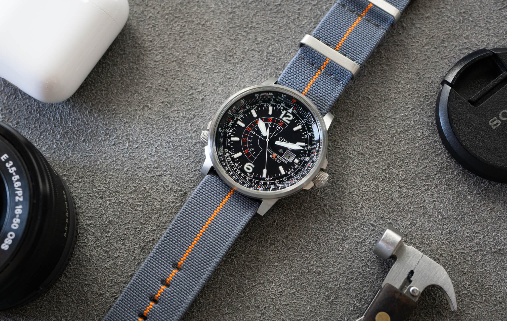
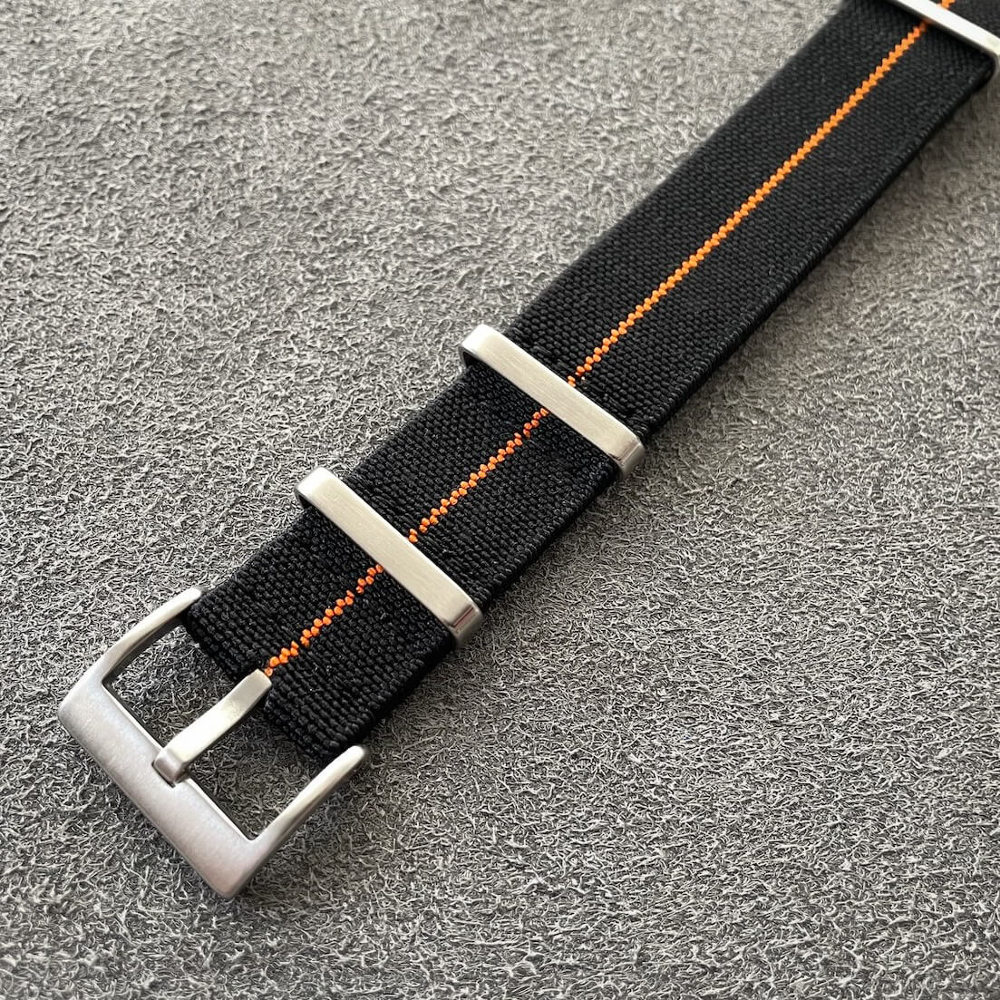
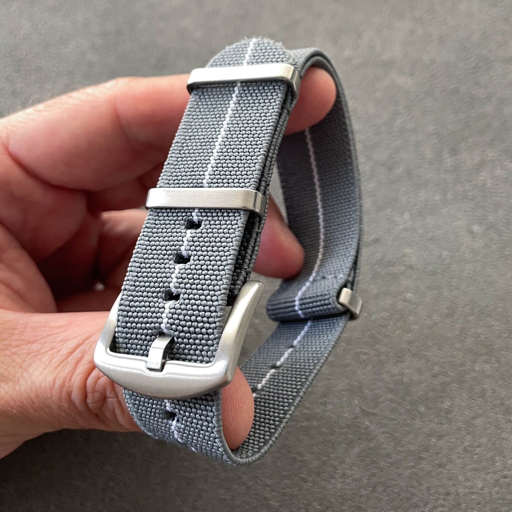
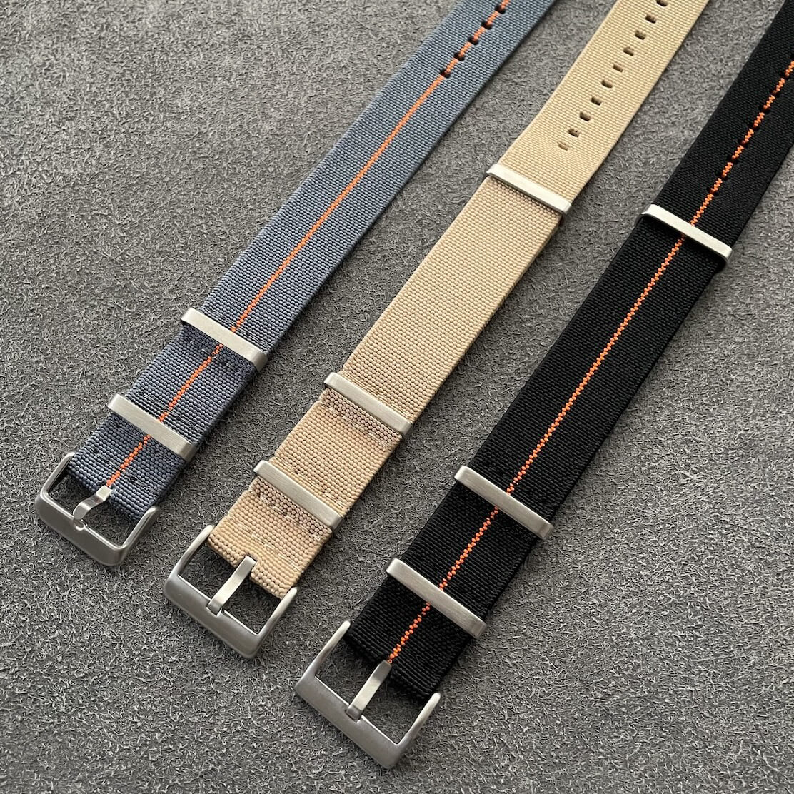
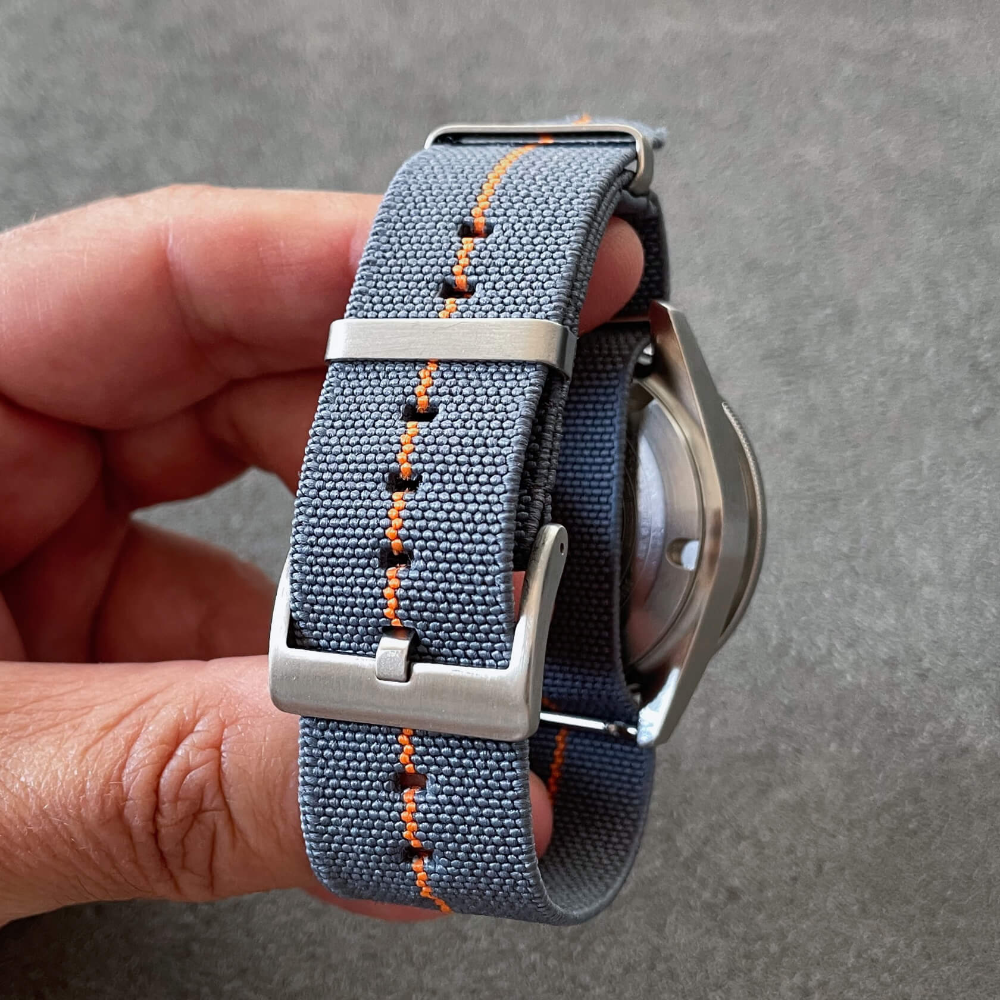
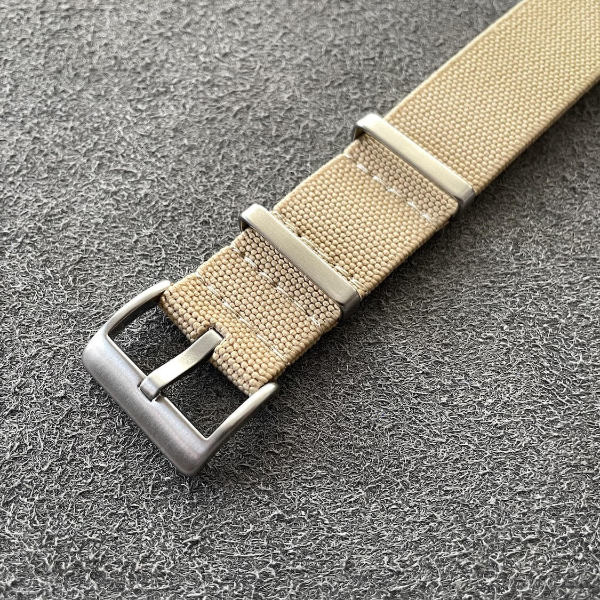
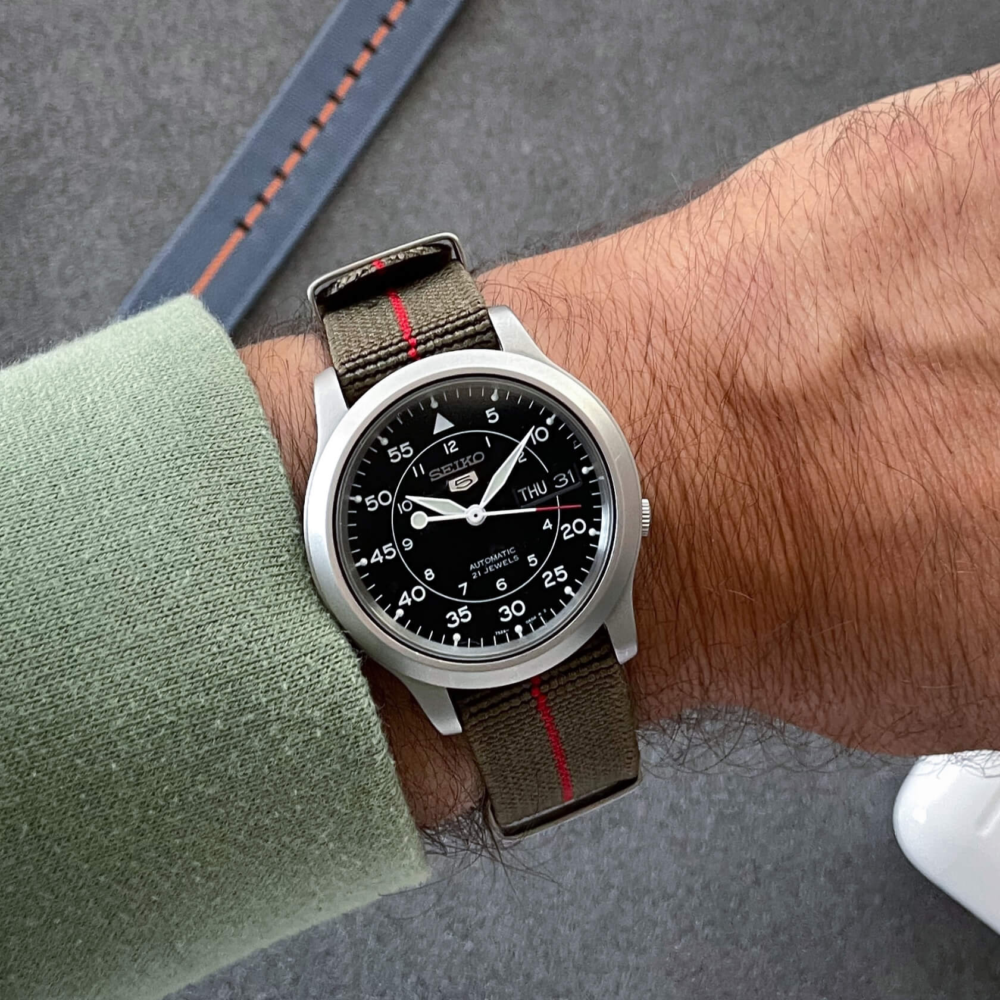
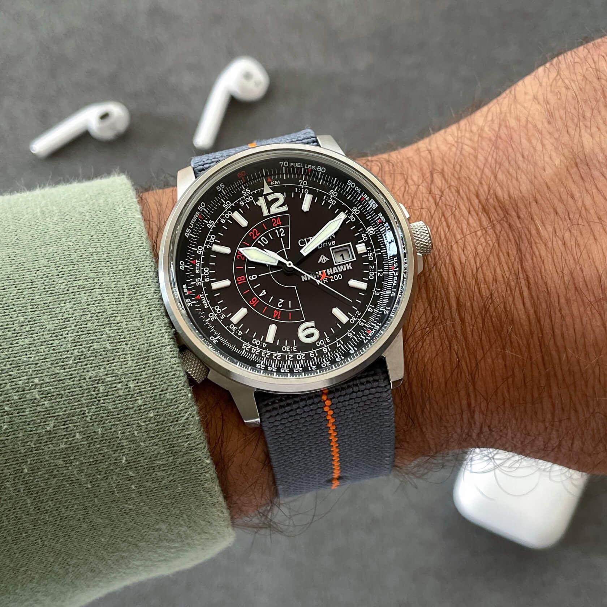
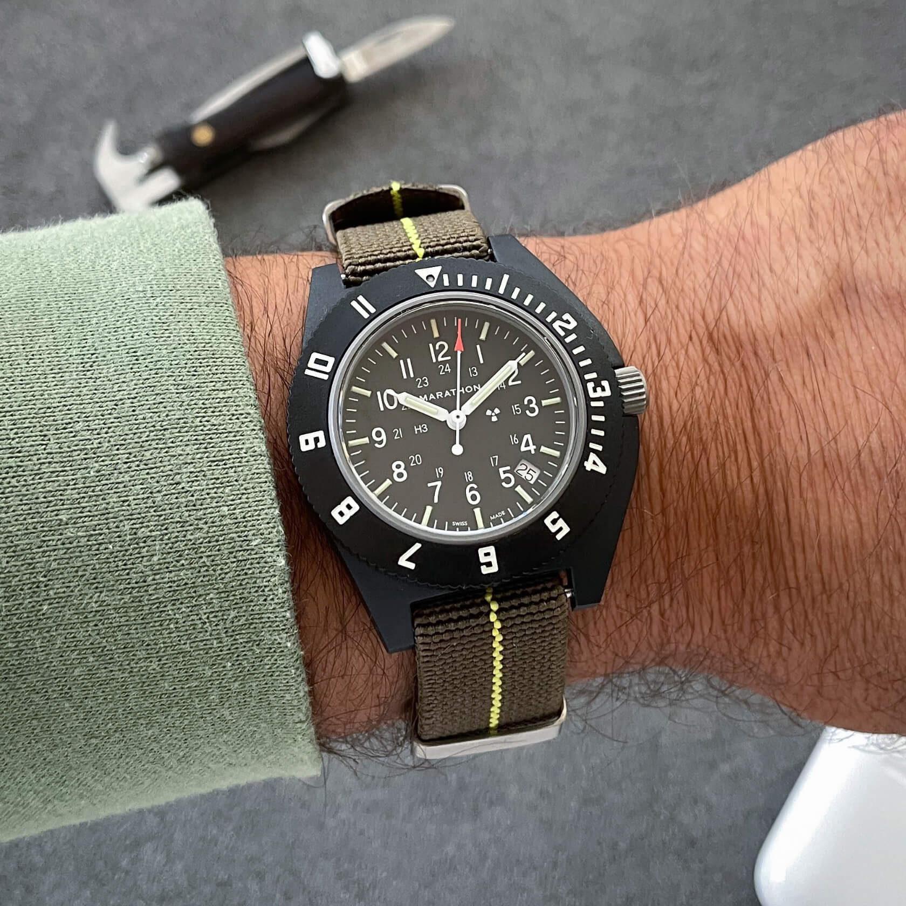

Review of the Standard Elastic Pass-Through Strap
Companies often experiment with different weaves and nylon blends. We have a standard nylon, ribbed nylon, seat-belt nylon, even the cotton-nylon combo. But what happens when they do a drastic change and make a pass-through strap using the soft elasticized material? Let me cut to the chase: the results are pretty awesome.
 Nenad Pantelic • November 5, 2023
Nenad Pantelic • November 5, 2023

| Quality | |
| Comfort | |
| Design | |
| Durability |
The verdict: The pinnacle of comfort in a pass-through design. The elastic material gives a perfect, snug fit that's hard to beat for all-day wear. Just be mindful of the added thickness and lackluster durability.
What we like?
- Very comfortable
- Breathable strap
- They come in many colors
- Upgraded hardware compared to regular natos
- Perfect fit if you're usually between holes
What we don't like?
- Less durable than regular nylon straps
- Thicker that usual
- They are a bit short
Full review
I am a type of enthusiast who loves testing different watch strap materials and designs, I was immediately interested in these elastic natos, especially since I'm already a fan of similar styles like the Marine Nationale. The fact that these straps come in a huge variety of designs made my decision to buy a dozen of them an easy one.
After wearing them extensively, I'm happy to report they are excellent. First, I'll cover the technical specifications, and then I'll share my detailed impressions.
Technical details
| Material | An elasticized nylon blend |
| Thickness | 1.2-1.5mm |
| Tapering | None |
| Length | 250-270mm |
| Hardware | Stainless steel |
| Edges & cut lines | Heat treated |
| Finishing | Matte; textured |
For this review, I have a grey one with a white stripe, a beige one, a solid black one, a black one with an orange stripe, a dark grey one with an orange stripe, and two green straps in 18mm with either red or yellow stripe.
But there are many more color options are available on the market. I'm confident that you can easily find a color or design you need.
Design and Materials
The straps ecosystem has moved beyond simple designs, with companies now using heavy-duty hardware and advanced materials. This elastic nylon strap is a prime example of that evolution.
The material we have here is elastic nylon blend. It is a bit thick but it is featherweight, breathable, and very comfortable. It bends with ease and conforms to the wrist. It is not flimsy at all. The nylon is very robust.
The straps feature a substantial, brushed buckle and two stainless steel keepers (both are sewn-in). Instead of stitching, the edges are cleanly heat-sealed to prevent fraying.



The length is designed to be practical, eliminating the need to fold and tuck excess material, which keeps the overall look neat and clean, but that prevents these straps from being used in professional settings, worn over a jacket or a wetsuit.
These are lifestyle straps, made for desk divers, after all.
Comfort and Durability
The straps are breathable, soft, and incredibly comfortable. Wearing them is an enjoyable experience.
The elastic material has a certain "bite," which helps in cases where you are mostly in between holes.
I usually wear them a bit tighter, as the elastic material stretches and keeps the watch head in place.


As I mentioned, one of the primary advantages of the elastic material is comfort. Unlike some nylon straps, this cotton blend doesn't require a break-in period.
Although I haven't used them extensively, I noticed that the hole for the buckle has stretched slightly. It's not overly dramatic, but still worth mentioning.
In terms of longevity, it's unlikely these straps will endure multiple years of constant wear. If you rotate through several of them, their lifespan will be extended. But, relying on a single strap daily will likely see it last for about one season.
Initial Usage Ah, finally! A pass-through strap that fits perfectly from the get-go. I don't have that feeling of being between holes. It’s comfortable but a tad short.
Three months of use The overall wearing experience has been good, but I've noticed that the hole I use to fasten the strap has loosened and stretched a bit.
Six months of use The colors are still like new, with no fading or discoloration. The stitching has held up fine, and the heat-treated edges haven’t started to fray.
Compatibility and Pairing Recommendation
These elastic nato pass-through straps are versatile, and they pair well with most of my watches, especially those with monochrome dials and brushed steel cases.
This style is a natural match for a wide range of watches, from pilot and military pieces to dive and field watches. It also gives chronographs a modern, sporty twist, that leather or sailcloth cannot manage.
I have to confess something about the colors. Since they are never too punchy and bright, but matte and subdued, wearing something that is not black, blue or green feels like a cheat code. In situations where a black strap would be too mundane, the khaki or mustard yellow is just perfect. So don’t be afraid of making funky combinations.
Just be aware: as a pass-through strap, it adds about 1.2mm up to 1.5mm to the watch's height, which can be significant on an already beefy watch. It can also create an awkward fit on watches with very little clearance between the spring bars and the case.



Where to Buy
Elastic nato pass-through straps are available from a wide range of retailers. It's likely that most of these stores order from a small number of manufacturers and add their own minor customizations, such as a stamped logo on the hardware.
From the companies currently listed in the StrapHunter catalog, elastic nato pass-through straps can be purchased from the following stores:
- BluShark Straps
- Clockwork Synergy
- StrapHabit
- StrapsCo
- StrapCode
- WatchBandit
- WatchGecko
- Watch Obsession
- ZULUDIVER
Prices range from $15 to $45. Choose the store that best suits you in terms of price, delivery time, and costs, and make your purchase from them.
Closing words
For me, products like this validate the importance of experimentation. Seeing brands move beyond different weaves of standard nylon and into entirely new textiles is a welcome trend, and the fantastic wearability of this strap is proof of its success.
It leaves me excited for what’s next, and I’ll be watching closely to see what innovations in materials and design the coming years will deliver.
In the meantime, I'll be wearing these elastic straps quite often.